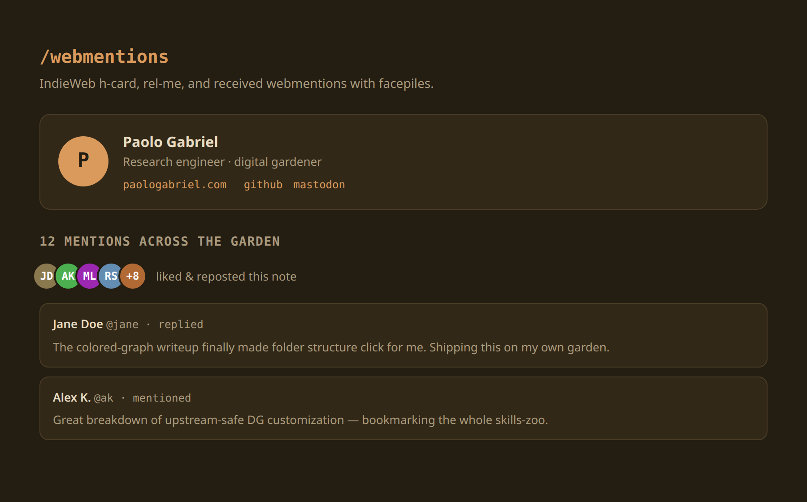
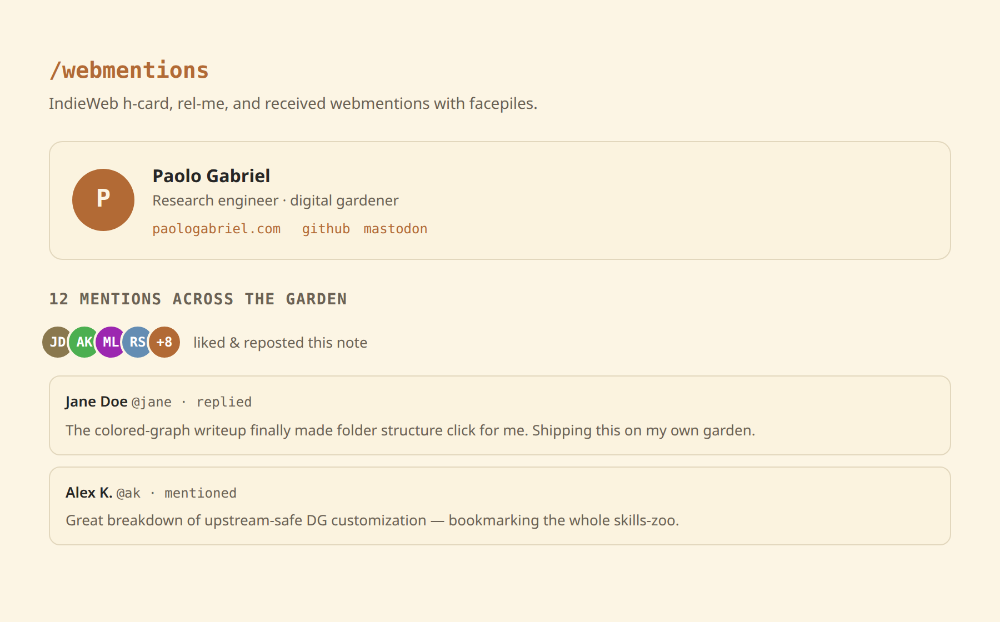

dg-indieweb
Join the IndieWeb - microformats, webmentions, and rel-me identity for your garden.


Makes your Digital Garden a first-class IndieWeb citizen. It exposes valid h-card and h-entry microformats, advertises webmention + IndieAuth discovery and rel="me" identity, fetches the mentions your pages receive and shows them on a /webmentions/ page (plus optional per-note facepiles), and ships two GitHub Actions to fetch received and send outgoing webmentions.
/webmentions/ page, real h-entry without editing plugin core, and reads the token from the environment only.
How it works
Three upstream-safe layers. Identity + microformats are components in user slots plus a tiny notes/head script that decorates the core note markup into a valid h-entry at runtime (core ships neither h-entry nor e-content, and a slot can't add a class to an ancestor it renders inside - so the classes are applied client-side, no note.njk edit). Receiving is a build-time fetch with a 1-hour cache feeding a display page; an optional Action archives mentions to a webmentions branch. Sending is sitemap-driven with a dedupe log and backoff.
notes → build → webmentions.mjs (env-gated fetch, 1h cache)
→ /webmentions/ page + per-note facepiles
notes/head script → decorate <article> into valid h-entry at runtime
Actions → fetch received (weekly) · send outgoing (monthly, sitemap-driven)How to use it
Copy the skill folder into your agent's skills directory, then in your Digital Garden repo ask:
git clone https://github.com/palol/skills-zoo.git
cp -r skills-zoo/skills/dg-indieweb ~/.claude/skills/(or ~/.agents/skills/)
Use the dg-indieweb skill to add IndieWeb support to my digital garden. Verify prerequisites first, install the h-card, microformats/discovery, build-time webmention fetch, and the
/webmentions/page into user-owned paths, set my domain and token via env/secrets, then build and walk me through verification.
What it touches
- Components (autoloaded, no layout edits): footer
h-card, anotes/headslot for discovery links + runtime h-entry, an optional per-note facepile innotes/afterContent. - Data + page:
_data/webmentions.mjs(build-time fetch) and a rootwebmentions.njkgiving the/webmentions/route. - Styles: appended to
custom-style.scss; facepile & card colors inherit your DG theme tokens, so light/dark just work. - Automation: two Node scripts in
scripts/+ two GitHub Actions to fetch received and send outgoing mentions.
assets/*.js before enabling the workflows.
What's in the box
- SKILL.md - invariants, install workflow, prerequisites, risk
- assets/zz-hcard-footer.njk - footer slot: owner h-card
- assets/aa-microformats.njk - head slot: discovery links, rel-me, runtime h-entry
- assets/webmentions.mjs - build-time fetch (env token, 1h cache)
- assets/webmentions.njk - the
/webmentions/display page + send form - assets/zz-note-webmentions.njk - per-note facepile (optional)
- assets/indieweb.scss - styles (TUNING KNOBS on top)
- assets/fetch-webmentions.js - archive received mentions to JSON
- assets/send-webmentions.js - sitemap-driven send with backoff
- assets/fetch-webmentions.yml - weekly fetch Action
- assets/send-webmentions.yml - monthly send Action
- references/architecture.md - the three layers + config surface
- references/tuning.md - every adjustable knob
- references/verify.md - mf2 / receive / send / security QA
Prerequisites
- An Obsidian Digital Garden (oleeskild plugin + Eleventy) repo with user-component autoloading and a
components/pageheader.njkinclude. @11ty/eleventy-fetchavailable for the build-time fetch.- A webmention.io account + token to receive mentions (sending works without it), and your identity domain(s).
Scope is Digital Garden only - the note markup shape, autoloader slots, and theme tokens are DG-specific.